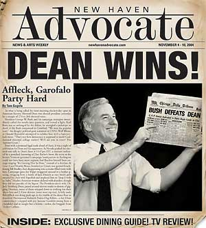

|

Dean Wins!
The incredible story of how Howard Dean became President of the
United States by seizing the radical center
.
- - - - - - - - - -
by Tom Gogola
 N WHAT IS BEING CALLED the most stunning election-day upset in American history, Howard Dean was elected president yesterday by a margin of 274 to 264 electoral votes. N WHAT IS BEING CALLED the most stunning election-day upset in American history, Howard Dean was elected president yesterday by a margin of 274 to 264 electoral votes.
President George W. Bush and his campaign strategists immediately called the results into question, and vowed a fight. Karl Rove was so unhinged by the defeat, he strangled a jackalope to death at the Bush compound in Crawford. "We won the popular vote!," the doughy political guru screamed at CNN's Wolf Blitzer, as Donald Rumsfeld attempted to subdue him with a hammerlock move. "That's not how democracy is supposed to work! Goddamned electoral college traitors! We'll see you in court! The Supreme Court."
Even with a promised legal tussle ahead of them, it was a night of celebration for Dean and his supporters. As
Nevada
pushed the electoral-vote tally in Dean's favor at
11:47pm EST
, a moment indicated by a panicked furrowing of Dan Rather's brow, the scene at the former
Vermont
governor's campaign headquarters in
Burlington
could not have been more orgiastic had Bacchus himself been onstage singing "It's Getting Hot In Here," instead of a shirtless Al Gore. Carol Moseley Braun, bombed on Cristal, was spotted french-kissing Bill Bradley, then disappearing into a smoke-filled room with him. Campaign guru Joe Trippi swaggered around in a leather g-string, swigging from a bottle of Jack Daniels as two Smith girls smeared his chest with VapoRub and implored him to "drop E with us, baby." Muslim-American women ululated with abandon, though they did not partake of the liquor. The President-elect's wife, Dr. Judy Steinberg Dean, passed around nitrous masks to dozens of giggling Deaniacs, many of them stripped down to nothing but their sports bras and J. Crew skivvies (some wore rep ties). A fully nude Ben Affleck was doing push-ups in the middle of the dance floor as dozens of Homosexual Redneck Prairie-Dog Killers -- a key Dean constituency -- clapped with joy. Janeane Garofalo swung from a chandelier clad in naught but a bowtie -- stolen, she bragged, from Tucker Carlson.
Above the ruckus, President-elect Dean, decked out in his now-trademark a-shirt, took to the stage, wiped a bit of festive vomit from his chin, and -- keeping with his campaign pledge to "always support states' rights, even when it's Texas" -- slurred happily: "We're going to South Carolina and Oklahoma and Arizona and North Dakota and New Mexico, and we're going to California and Texas and New York, and we're going to South Dakota and Oregon and Washington and Michigan. And then we're going to
Washington
D.C.
!"
It was pandemonium, utter pandemonium. When the last bottle of bubbly had been swigged many, many hours later, the only question that remained was: How did Howard Dean do it? Oh, and: Did Ted Kennedy really drop 'shrooms with Moby?
Dean ascends to the presidency after an excruciatingly bitter campaign season that had all the subtlety and sophistication of the Second Battle of Ypres.
In a campaign war wherein Dean went prairie-dog hunting with avowed homosexual rednecks, that magical planet known as the "radical center" found its orbit in Dean, who shrewdly beat George W. Bush at his own game of getcha-gotcha-gootcha-gitcha politics. It was a campaign that saw the final farting exhaust fume belched out by hoary old Ralph Nader -- he withdrew from the race in disgrace after coming out as a closet Hummer owner -- and forced George W. Bush back onto the booze.
Still, Dean faces an uphill battle. Besides battling whatever drawn-out hoolagoola Bush and his cronies can conjure in the courts, Dean inherits a grotesquely misshapen federal deficit, a grueling war in Iraq and a Congress filled with mainstream Democrats and Republicans united in their fear and hatred for him and his radical-centrist agenda.
But Dean has the people on his side, at least for now, and those people are in no mood for partisan bickering -- not after all they've been through together. He's promised them a lot, but nothing specific beyond his Churchillian appropriation of "blood, sweat, tears, and national health care, and a gun if you'd like one, and gay sex, sure, that's fine too."
The genius of Dean's campaign is that it bridged a supposed great divide in this country, showing it for what it was and shoving it back in the face of the media machers and oligarchs who cooked up the sham in the first place. He decried what he called a "ruling-class-generated campaign to keep ordinary, if weird, Americans at one another's throats over largely personal and generally inconsequential issues over identity."
To say Howard Dean engaged in class warfare is to say that Caesar was just looking to borrow a cup of sugar. In one fell campaign swoop, Dean won the culture war, demolished the identity politics movement, revived Marxism, and brought hope to Homosexual Redneck Prairie-Dog Killers across the land.
Despite the bruising tenor and take-no-prisoners rhetorical violence of a national election, a presidential campaign is actually a delicate little bird whose life and death is always hanging in a most precarious of balances between pandering and principle, between your dumb luck and someone else's dumb utterances.
Howard Dean was the recipient of some good luck. He won the election in part because of George Bush's general incompetence and embarrassing gaffes; in part because he took his mother's advice; and in part because of Teresa Heinz Kerry's big mouth. He proved himself a shrewd tactician and master strategist. And, like everything else American, it all started in
Hollywood
.
In the early autumn of 2003 -- sources deep inside the Dean camp say -- Harvey Weinstein got a call from Dean campaign manager Joe Trippi. Trippi wanted to talk to the liberal Miramax chief about Michael Moore's Fahrenheit 9/11 , which was then mired in controversy over its release date. Trippi asked Weinstein if the two of them could have a sitdown with
Moore
.
The three met at a
New York
muffin shop. Trippi cut to the chase. He asked Moore to delay releasing his film for one reason: Dean wanted to make its issues his own -- the damning Bush-Saudi relations, Bush's incredible mishandling of 9/11 before and after, the smirky display of class privilege -- and believed that the Bush people, not to mention the DLC, would eagerly and successfully link Moore with Dean once the film came out, which would tank his campaign before it had a chance to get rolling. Trippi went on:
"Howard's going to tone it down. He's going to roll down his sleeves for a while and play ball -- he's going to start looking and acting presidential. He's going to oppose gun control, he's going to play up his credentials as a deficit hawk, and he's going to start going after Dennis Kucinich with the proverbial rusty scimitar. Once he's secured the nomination, the sleeves get rolled up again, and then we start appropriating Michael's message. The Deaniacs will have to suck it up in the meantime."
Weinstein leaned in, girth first. "Whose fucking idea was this?" he finally spat out.
"Dean's mother." Trippi said. "She thinks he looks like -- how do you people say? -- a schlemiel up there. He's all bent out of shape about it."
"His mother?"
"She's a Republican, you know.
Upper East Side
."
"Interesting."
"Look, Howard is promising to roll up the sleeves again. He's going to start dressing like a trucker. But we've got to be able to keep
Moore
's critique of Bush under wraps for now -- things go well, after the convention, you'll see the Dean of old."
"This is a crazy idea,"
Moore
said.
"I'm not thrilled either," Trippi responded.
"No, no," Weinstein offered. "I see the logic here. Kucinich is a fruitcake, no one's paying attention to him anyway, he can blast away all he wants at the president, fuck him, let him hammer away at the antiwar stuff. Sharpton's entertaining but... talk about unelectable... they can do the dirty work. I like this... "
"
Harvey
! It's my movie!"
"Michael, relax. Eat your crumb-bun."
"He's going to go for the NRA endorsement too."
"Holy shit! Joe, can you do the Heimlich? Michael, Michael, are you okay?"
In the end,
Moore
survived the crumb-bun choking episode, and Harvey Weinstein made him an offer he couldn't refuse: He would finance
Moore
's decades-long dream to remake Ishtar in exchange for
Moore
's agreeing to delay the release of his incendiary film until after the Democratic convention.
But even with
Moore
in the bag, Dean knew his candidacy was in trouble beginning in late 2003. He had become the putative front-runner, largely on the strength of his antiwar stance, and had energized millions of youngsters with his hip, internet-driven campaign. That would only take him so far; Dean desperately needed to expand his base.
And so, throughout the winter of 2003-04, Dean embarked on his march to the radical center, picking up long-forgotten constituencies the way a micologist plucks funky, lonely mushrooms from the forest. His strategists, coming around to Dean's mom's way of thinking, realized just how brainwashed the typical Deaniac was, and so betrayed them at every opportunity by courting votes from the most extreme corners of American society.
"We drew the line at the Klan and PETA," says one campaign insider, "but besides that, we'd listen to anyone's concerns and make them our own." In embracing extremes, Dean brought himself to the radical middle, and in doing do, defused those same extremes. The age of irony had never seen anything like it.
During his famous "Guns and Gays" speech in January 2004, Dean bridged a theretofore vast gap between Chelsea Boys and Good Ol' Boys when he said, "The Second Amendment gives us the right to bear arms, and I support that right with all my heart -- I like to shoot things, and I like things that have been shot. I also believe that we, as Americans, have the right to play butt-bongo with whomever we chose, and who among us can say we haven't wondered what it's like on the old 'down low?' If you are gay in this country, I suggest you arm yourself. If you don't like gays -- I suggest you look deep into your heart and ask yourself, 'What's with all this phallic imagery in my gun-rack?'"
The speech struck a chord, made it okay to be gay and gun-loving. Before long, a new pro-Dean organization had formed. Homosexual Redneck Prairie Dog Killers crystallized what the campaign was all about -- a campaign not afraid to point out cultural, political, and yes, sexual connections between previously polarized groups of Americans. It was an area none had dared tread before, except when Dick Morris went on his toe-sucking rampage during back in the
Clinton
years.
Even with his radical centrism forging new alliances and bringing millions of new voters into the electoral fold, Howard Dean still faced enormous resistance from the boring-centrist wing of the Democratic Party, a resistance exemplified by the looming chin of John Kerry, war hero. And, despite Dean's best efforts, Kerry managed to pluck the fruits of
Iowa
in the first Democratic primary. That come-from-behind victory propelled Kerry into the national spotlight, but Dean's people were jackal-like in their immediate deployment of the class-war card to undo Kerry's Big Mo before it got too... momentous: They assailed Kerry for his money-grubbing ways and faux attempts to temper his Brahmin disposition.
As the ruling class began its collective genuflect before the
Massachusetts
senator, all stops were pulled in an effort to derail the still-dangerous Dean juggernaut. Dan Rather strong-armed 60 Minutes into letting him interview Kerry and his wife days before the
New Hampshire
primary. The chit-chat was congenial enough at first: boilerplate values talk, mushy critiques of Bush, and the couple answering questions about their wealth by maintaining that though they were loaded, they understood the plight of middle-class Americans. (Poor people were given scant mention, and Rather did not push the issue.)
Rather, clearly charmed, and clearly enjoying his role as kingmaker, turned to the subject of Dean -- his eyes glittering in anticipation -- but his best-laid plans were shattered in an outburst that came to be known as the Shriek from
Mozambique
:
Rather: You defeated Howard Dean last week in
Iowa
, much to everyone's surprise. What do you have to say about his candidacy, and why do you think you're better for the Democratic Party?
Kerry: That's a great question, Dan. First, let me say that I have a plan for
America
that goes beyond what Dean is offering. I have a plan...
Heinz Kerry: Can I say something here?
Rather: Of course, Mrs. Heinz Kerry.
Heinz Kerry: I think the biggest difference is that Howard Dean's wife hasn't been on the trail with him, at all. And I have. It makes a big difference. I don't know what that woman's problem is...
Kerry: Honey...
Heinz Kerry: I mean, do you think I like doing this? Every day, putting on a smile, keeping my mouth shut? Every day, we're going to
South Carolina
, and
Arizona
, and
North Dakota
and
New Mexico
, and we're going to
California
and
Texas
and
New York
, and we're going to
South Dakota
and
Oregon
and
Washington
and
Michigan
-- not on your fucking life, Dan, do I like this. I've got a lot better things to do with my time -- and, yeah, with my money -- than follow my husband around. I mean, she doesn't even work, what does she do, sit around all day baking babka?
Kerry: Teresa has had a long week, Dan...
Rather: Actually, Mrs. Steinberg is a physician.
Heinz Kerry: Oh, Dr. Judy, what-ever!
Kerry: Teresa!
Heinz Kerry: No! If I have to do this crap, why doesn't that bitch?
Kerry: Jesus Christ, Teresa! I told you to lay off the wine in the green room! Dan, my wife, she's not herself. Let me say, I have a plan...
And it was over for Kerry. Just like that. He was pelted with babka in downtown
Manchester
the day of the primary, and his wife was likened to "a detestable combination of Suha Arafat and Leona Helmsley" by The New York Times . Dean easily took
New Hampshire
and, with it, all the Big Mo' from Kerry. When last seen, John Kerry was wind-surfing in the
Gulf
of
Tonkin
. Teresa was shacked up with Sen. Kay Bailey Hutchison.
Dean seized the moment and, emboldened by his growing constituency of stone-cold extremists, reverted to his pre-Momma- intervention campaign style. By the time the convention rolled around, the sleeves were rolled up again -- hell, the shirt was off -- the Deaniacs were re-energized, and he returned to the blistering rhetoric of yore.
Once the nomination was his -- he shrewdly chose Jeopardy mega-champion Ken Jennings as his running mate -- Dean became the first non-Kucinich, non-Sharpton Democrat in the
United States
to openly mock Bush's claims to be the right man for the war on terror. Over Labor Day weekend, he famously made a less-than-decorous observation to a supportive, gun-and-gay integrated crowd: "It's hard to understand how George Bush can claim to be the man best suited to fight terrorism when the fucking terrorists blew up those buildings while he was president! Does anyone else have a problem with this? 'I'm the best man to fight the drug war because I used to do a lot of blow! I'm the best man to fight against stem-cell research because I'm clearly a single-cell organism myself!' People! Get with the program!"
Later that month, speaking before the National Union of A Group of Wildly Diverse American People United For the Express Purpose of Defeating George W. Bush, Dean ratcheted it up yet another notch: "Do you remember the Iran-Iraq war?" he asked the crowd of shoeless lesbian loggers, dwarf metallurgists, Christian polygamists, techno-Luddites, Latter-day atheists, dog-training cat sitters, origami-butlers, venom-spewing stamp collectors, blind yo-yo collectors, crippled violin repairmen, gout-suffering birdsong singers and old-time highwaymen.
"Here's what happened," Dean said. "Donald Rumsfeld and George The Elder convinced those two countries that they had more separating them than they had in common -- does that sound familiar?! Those poor countries spent a decade at one another's throat,
Iran
,
Iraq
,
Iran
,
Iraq
, bombing, killing, gassing, the whole bit. And when the smoke finally cleared, they realized that they'd been totally bamboozled! Ladies and gentlemen, those same bamboozlers are now bamboozling you! Now they want to create a new country, called Irap, fill it with American soldiers, and give it a Major League Baseball franchise. This is crazy talk!"
The crowd went nuts. They loved their baseball, but this was too much.
The chattering class, the elite, the Establishment: Call it what you will, it was shocked and awed at Dean's intense cross-cultural appeal; his ability to seamlessly weave identity with war, class with chaos theory, all in the service, as he often said, of "reclaiming the Democratic wing of the Republican wing of the Whig party." To the elites, Bush's war was always about securing oil, protecting Empire, lining pockets. Simple stuff. Bush's "Irap Strategy" had been enthusiastically embraced by the Council on Foreign Relations, the New York Times op-ed page and the cast of The OC. Now Dean threatened to unravel their whole program.
The debates would settle the issue once and for all. Bush initially refused to debate Dean, he said, on national security grounds. "That man is a crazy terrorist," he told Rove. "I'm afraid for my life being up there alone with him. Can Dick come too?" But pressure mounted on the increasingly frazzled president, who, as was reported on bushboozin.com, had apparently starting chugging Red Bull and Stoli O's moments after the NRA's endorsement of Dean in August. Under intense pressure, Bush agreed to one debate, provided it was moderated by Tim McGraw. After much haggling, Dean insisted that a Dixie Chick of his choosing would be co-moderator. (He chose Natalie.)
Unfortunately for Bush, he was edge-of-apoplectic from the moment Natalie asked him, "Mr. President, boxers or CIA briefs?" (He answered "boxers," which, as it turned out, was a lie.)
Even still, Bush held his own on issues around
Iraq
, claiming with his typical zeal that WMD "can also stand for Wizards, Merlins and Dragons, and there's plenty of that stuff in
Afghanistan
, and by extension,
Iraq
. See, Saddam, he visited
Kabul
in 1962, we know that, he stayed at the Hilton -- nice hotel, I've heard. Rummie told me. A bit sandy in the sheets department, though. Al Qaeda, we know that too. It's there. Camps -- thugs, they hate freedom, it's on the march. 9/11 -- that was here, us, this country was attacked. Kofi Annan is a Crip. Saddam Hussein, he's a rat in a hole, we got him, mission accomplished. See, in Crawford, we eat spiders.
Poland
-- now there's a country you can sink your fist into."
Bush was rolling. "It was like he was channeling his father," Bob Woodward wrote. "His cadences were direct, blunt, and perfectly pitched toward wooing the disaffected lunatics who'd gravitated toward Dean."
Feeling it, Bush came out from behind the podium and continued, "
Iraq
's coming along, we'll finish it off soon enough. We're on the road to freedom in Irap, too -- we got no roads yet, but you get me. My opponent says it's the wrong country in the wrong place at the wrong time. But that's going to be some fine country when we get done building it, let me tell you. There's hard work to do, sure, hard work. This job -- no time for nappin'. Now, my opponent here -- "
There was a collective weird gasp from the audience as Bush gave his peroration. Tim McGraw gesticulated wildly. Natalie giggled into her hand.
The President's fly was open, wide open -- and it wasn't boxers or briefs.
The President of the
United States of America
was freeballing his way to certain electoral humiliation. But he plowed on, oblivious. "My opponent's unpatriotic and treasonous attacks have undermined our security... "
"Mr. President... " Dean interjected.
"I'm not done. Your unpatriotiticity is... "
"Mr. President, you need to zip it, now. "
Even the pro-Bush New York Post couldn't resist: president lets it all hang out in debate.
In retrospect, it was the defining moment of the campaign.
Reprinted from New Haven Advocate

|